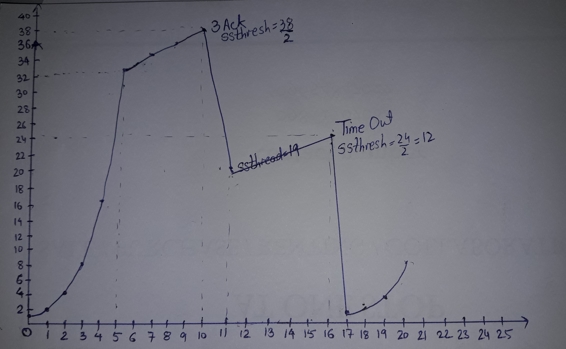

Prerequisites – Basic Congestion control knowledge
TCP uses a congestion window and a congestion policy that avoid congestion.Previously, we assumed that only receiver can dictate the sender’s window size. We ignored another entity here, the network. If the network cannot deliver the data as fast as it is created by the sender, it must tell the sender to slow down. In other words, in addition to the receiver, the network is a second entity that determines the size of the sender’s window.
Congestion policy in TCP –
- Slow Start Phase: starts slowly increment is exponential to threshold
- Congestion Avoidance Phase: After reaching the threshold increment is by 1
- Congestion Detection Phase: Sender goes back to Slow start phase or Congestion avoidance phase.
Slow Start Phase : exponential increment – In this phase after every RTT the congestion window size increments exponentially.
Initially cwnd = 1 After 1 RTT, cwnd = 2^(1) = 2 2 RTT, cwnd = 2^(2) = 4 3 RTT, cwnd = 2^(3) = 8
Congestion Avoidance Phase : additive increment – This phase starts after the threshold value also denoted as ssthresh. The size of cwnd(congestion window) increases additive. After each RTT cwnd = cwnd + 1.
Initially cwnd = i After 1 RTT, cwnd = i+1 2 RTT, cwnd = i+2 3 RTT, cwnd = i+3
Congestion Detection Phase : multiplicative decrement – If congestion occurs, the congestion window size is decreased. The only way a sender can guess that congestion has occurred is the need to retransmit a segment. Retransmission is needed to recover a missing packet which is assumed to have been dropped by a router due to congestion. Retransmission can occur in one of two cases: when the RTO timer times out or when three duplicate ACKs are received.
- Case 1 : Retransmission due to Timeout – In this case congestion possibility is high.
(a) ssthresh is reduced to half of the current window size.
(b) set cwnd = 1
(c) start with slow start phase again. - Case 2 : Retransmission due to 3 Acknowledgement Duplicates – In this case congestion possibility is less.
(a) ssthresh value reduces to half of the current window size.
(b) set cwnd= ssthresh
(c) start with congestion avoidance phase - GATE CS 2008, Question 56
- GATE CS 2012, Question 65
- GATE CS 2014 (Set 1), Question 65
- GATE IT 2005, Question 73
Example – Assume a TCP protocol experiencing the behavior of slow start. At 5th transmission round with a threshold (ssthresh) value of 32 goes into congestion avoidance phase and continues till 10th transmission. At 10th transmission round, 3 duplicate ACKs are received by the receiver and enter into additive increase mode. Timeout occurs at 16th transmission round. Plot the transmission round (time) vs congestion window size of TCP segments.

GATE CS Corner Questions –
Practicing the following questions will help you test your knowledge. All questions have been asked in GATE in previous years or in GATE Mock Tests. It is highly recommended that you practice them.